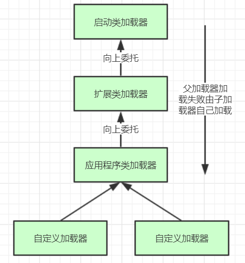

<!DOCTYPE html>


<html lang="zh-CN">


<head>
  <meta charset="utf-8" />
    
  <meta name="viewport" content="width=device-width, initial-scale=1, maximum-scale=1" />
  <title>
    JVM-类加载机制深度剖析 |  
  </title>
  <meta name="generator" content="hexo-theme-ayer">
  
  <link rel="shortcut icon" href="/favicon.ico" />
  
  
<link rel="stylesheet" href="/dist/main.css">

  
<link rel="stylesheet" href="https://cdn.jsdelivr.net/gh/Shen-Yu/cdn/css/remixicon.min.css">

  
<link rel="stylesheet" href="/css/custom.css">

  
  
<script src="https://cdn.jsdelivr.net/npm/pace-js@1.0.2/pace.min.js"></script>

  
  

  

</head>

</html>

<body>
  <div id="app">
    
      
    <main class="content on">
      <section class="outer">
  <article
  id="post-JVM-类加载机制深度剖析"
  class="article article-type-post"
  itemscope
  itemprop="blogPost"
  data-scroll-reveal
>
  <div class="article-inner">
    
    <header class="article-header">
       
<h1 class="article-title sea-center" style="border-left:0" itemprop="name">
  JVM-类加载机制深度剖析
</h1>
 

    </header>
     
    <div class="article-meta">
      <a href="/2020/09/08/JVM-%E7%B1%BB%E5%8A%A0%E8%BD%BD%E6%9C%BA%E5%88%B6%E6%B7%B1%E5%BA%A6%E5%89%96%E6%9E%90/" class="article-date">
  <time datetime="2020-09-08T08:20:32.000Z" itemprop="datePublished">2020-09-08</time>
</a>   
<div class="word_count">
    <span class="post-time">
        <span class="post-meta-item-icon">
            <i class="ri-quill-pen-line"></i>
            <span class="post-meta-item-text"> 字数统计:</span>
            <span class="post-count">3k</span>
        </span>
    </span>

    <span class="post-time">
        &nbsp; | &nbsp;
        <span class="post-meta-item-icon">
            <i class="ri-book-open-line"></i>
            <span class="post-meta-item-text"> 阅读时长≈</span>
            <span class="post-count">11 分钟</span>
        </span>
    </span>
</div>
 
    </div>
      


  
    <div class="article-entry" itemprop="articleBody">
       
  <p><strong>1、类加载过程</strong></p>
<p>多个java文件经过编译打包生成可运行jar包，最终由java命令运行某个主类的main函数启动程序，这里首先需要通过<strong>类加载器</strong>把主类加载到JVM。</p>
<p>主类在运行过程中如果使用到其它类，会逐步加载这些类。</p>
<p>注意，jar包里的类不是一次性全部加载的，是使用到时才加载。</p>
<p>类加载到使用整个过程有如下几步：</p>
<a id="more"></a>

<p><strong>加载 &gt;&gt; 验证 &gt;&gt; 准备 &gt;&gt; 解析 &gt;&gt; 初始化 &gt;&gt;</strong> 使用 &gt;&gt; 卸载</p>
<ul>
<li>加载：在硬盘上查找并通过IO读入字节码文件，使用到类时才会加载，例如调用类的main()方法，new对象等等，在加载阶段会在内存中生成一个代表这个类的java.lang.Class对象，作为方法区这个类的各种数据的访问入口</li>
<li>验证：校验字节码文件的正确性</li>
<li>准备：给类的静态变量分配内存，并赋予默认值</li>
<li>解析：将<strong>符号引用</strong>替换为直接引用，该阶段会把一些静态方法(符号引用，比如main()方法)替换为指向数据所存内存的指针或句柄等(直接引用)，这是所谓的<strong>静态链接</strong>过程(类加载期间完成)，<strong>动态链接</strong>是在程序运行期间完成的将符号引用替换为直接引用，下节课会讲到动态链接</li>
<li><strong>初始化</strong>：对类的静态变量初始化为指定的值，执行静态代码块</li>
</ul>
<p></p>
<p><strong>2、类加载器和双亲委派机制</strong></p>
<p>上面的类加载过程主要是通过类加载器来实现的，Java里有如下几种类加载器</p>
<ul>
<li>启动类加载器：负责加载支撑JVM运行的位于JRE的lib目录下的核心类库，比如rt.jar、charsets.jar等</li>
<li>扩展类加载器：负责加载支撑JVM运行的位于JRE的lib目录下的ext扩展目录中的JAR类包</li>
<li>应用程序类加载器：负责加载ClassPath路径下的类包，主要就是加载你自己写的那些类</li>
<li>自定义加载器：负责加载用户自定义路径下的类包</li>
</ul>
<p>看一个<strong>类加载器</strong>示例：</p>
<p><code>public class TestJDKClassLoader {</code><br>    <code>public static void main(String[] args){</code><br>        <code>System.out.println(String.class.getClassLoader());</code><br>        <code>System.out.println(com.sun.crypto.provider.DESKeyFactory.class.getClassLoader().getClass().getName());</code><br>        <code>System.out.println(TestJDKClassLoader.class.getClassLoader().getClass().getName());</code><br>        <code>System.out.println(ClassLoader.getSystemClassLoader().getClass().getName());</code><br>    <code>}</code><br><code>}</code></p>
<p><code>运行结果：</code><br><code>null    //启动类加载器是C++语言实现，所以打印不出来</code><br><code>sun.misc.Launcher$ExtClassLoader
sun.misc.Launcher$AppClassLoader</code><br><code>sun.misc.Launcher$AppClassLoader</code></p>
<p><strong>自定义一个类加载器示例</strong>：</p>
<p>自定义类加载器只需要继承 java.lang.ClassLoader 类，该类有两个核心方法，一个是loadClass(String, boolean)，实现了<strong>双亲委派机制</strong>，大体逻辑</p>
<ol>
<li>首先，检查一下指定名称的类是否已经加载过，如果加载过了，就不需要再加载，直接返回。</li>
<li>如果此类没有加载过，那么，再判断一下是否有父加载器；如果有父加载器，则由父加载器加载（即调用parent.loadClass(name, false);）.或者是调用bootstrap类加载器来加载。</li>
<li>如果父加载器及bootstrap类加载器都没有找到指定的类，那么调用当前类加载器的findClass方法来完成类加载。</li>
</ol>
<p>还有一个方法是findClass，默认实现是抛出异常，所以我们自定义类加载器主要是<strong>重写**</strong>findClass<strong>**方法</strong>。</p>
<pre><code>    public class MyClassLoaderTest {
    static class MyClassLoader extends ClassLoader {
        private String classPath;

    public MyClassLoader(String classPath) {
        this.classPath = classPath;
    }

    private byte[] loadByte(String name) throws Exception {
        name = name.replaceAll(&quot;\\.&quot;, &quot;/&quot;);
        FileInputStream fis = new FileInputStream(classPath + &quot;/&quot; + name
                + &quot;.class&quot;);
        int len = fis.available();
        byte[] data = new byte[len];
        fis.read(data);
        fis.close();
        return data;
    }

    protected Class&lt;?&gt; findClass(String name) throws ClassNotFoundException {
        try {
            byte[] data = loadByte(name);
            //defineClass将一个字节数组转为Class对象，这个字节数组是class文件读取后最终的字节数组。
            return defineClass(name, data, 0, data.length);
        } catch (Exception e) {
            e.printStackTrace();
            throw new ClassNotFoundException();
        }
    }

}

public static void main(String args[]) throws Exception {
    MyClassLoader classLoader = new MyClassLoader(&quot;D:/test&quot;);
    Class clazz = classLoader.loadClass(&quot;com.tuling.jvm.User1&quot;);
    Object obj = clazz.newInstance();
    Method method= clazz.getDeclaredMethod(&quot;sout&quot;, null);
    method.invoke(obj, null);
    System.out.println(clazz.getClassLoader().getClass().getName());
}</code></pre><p>}</p>
<p>运行结果：<br>=======自己的加载器加载类调用方法=======<br>com.tuling.jvm.MyClassLoaderTest$MyClassLoader</p>
<p><strong>全盘负责委托机制</strong></p>
<p>“<strong>全盘负责</strong>”是指当一个ClassLoder装载一个类时，除非显示的使用另外一个ClassLoder，该类所依赖及引用的类也由这个ClassLoder载入。</p>
<p><strong>双亲委派机制</strong></p>
<p>JVM类加载器是有亲子层级结构的，如下图</p>
<p></p>
<p>这里类加载其实就有一个<strong>双亲委派机制</strong>，加载某个类时会先委托父加载器寻找目标类，找不到再委托上层父加载器加载，如果所有父加载器在自己的加载类路径下都找不到目标类，则在自己的类加载路径中查找并载入目标类。</p>
<p>比如我们的Math类，最先会找应用程序类加载器加载，应用程序类加载器会先委托扩展类加载器加载，扩展类加载器再委托启动类加载器，顶层启动类加载器在自己的类加载路径里找了半天没找到Math类，则向下退回加载Math类的请求，扩展类加载器收到回复就自己加载，在自己的类加载路径里找了半天也没找到Math类，又向下退回Math类的加载请求给应用程序类加载器，应用程序类加载器于是在自己的类加载路径里找Math类，结果找到了就自己加载了。。</p>
<p><strong>双亲委派机制说简单点就是，先找父亲加载，不行再由儿子自己加载</strong></p>
<p><strong>为什么要设计双亲委派机制？</strong></p>
<ul>
<li>沙箱安全机制：自己写的java.lang.String.class类不会被加载，这样便可以防止核心API库被随意篡改</li>
<li>避免类的重复加载：当父亲已经加载了该类时，就没有必要子ClassLoader再加载一次，保证<strong>被加载类的唯一性</strong></li>
</ul>
<p>看一个类加载示例：</p>
<p><code>package java.lang;</code></p>
<p><code>public class String {</code><br>    <code>public static void main(String[] args) {</code><br>        <code>System.out.println(&quot;**************My String Class**************&quot;);</code><br>    <code>}</code><br><code>}</code></p>
<p><code>运行结果：</code><br><code>错误: 在类 java.lang.String 中找不到 main 方法, 请将 main 方法定义为:</code><br>   <code>public static void main(String[] args)</code><br><code>否则 JavaFX 应用程序类必须扩展javafx.application.Application</code></p>
<p>再来一个沙箱安全机制示例，尝试打破双亲委派机制，用自定义类加载器加载我们自己实现的 java.lang.String.class</p>
<pre><code>    public class MyClassLoaderTest {
    static class MyClassLoader extends ClassLoader {
        private String classPath;

    public MyClassLoader(String classPath) {
        this.classPath = classPath;
    }

    private byte[] loadByte(String name) throws Exception {
        name = name.replaceAll(&quot;\\.&quot;, &quot;/&quot;);
        FileInputStream fis = new FileInputStream(classPath + &quot;/&quot; + name
                + &quot;.class&quot;);
        int len = fis.available();
        byte[] data = new byte[len];
        fis.read(data);
        fis.close();
        return data;

    }

    protected Class&lt;?&gt; findClass(String name) throws ClassNotFoundException {
        try {
            byte[] data = loadByte(name);
            return defineClass(name, data, 0, data.length);
        } catch (Exception e) {
            e.printStackTrace();
            throw new ClassNotFoundException();
        }
    }

    /**
     * 重写类加载方法，实现自己的加载逻辑，不委派给双亲加载
     * @param name
     * @param resolve
     * @return
     * @throws ClassNotFoundException
     */
    protected Class&lt;?&gt; loadClass(String name, boolean resolve)
            throws ClassNotFoundException {
        synchronized (getClassLoadingLock(name)) {
            // First, check if the class has already been loaded
            Class&lt;?&gt; c = findLoadedClass(name);

            if (c == null) {
                // If still not found, then invoke findClass in order
                // to find the class.
                long t1 = System.nanoTime();
                c = findClass(name);

                // this is the defining class loader; record the stats
                sun.misc.PerfCounter.getFindClassTime().addElapsedTimeFrom(t1);
                sun.misc.PerfCounter.getFindClasses().increment();
            }
            if (resolve) {
                resolveClass(c);
            }
            return c;
        }
    }
}

public static void main(String args[]) throws Exception {
    MyClassLoader classLoader = new MyClassLoader(&quot;D:/test&quot;);
    //尝试用自己改写类加载机制去加载自己写的java.lang.String.class
    Class clazz = classLoader.loadClass(&quot;java.lang.String&quot;);
    Object obj = clazz.newInstance();
    Method method= clazz.getDeclaredMethod(&quot;sout&quot;, null);
    method.invoke(obj, null);
    System.out.println(clazz.getClassLoader().getClass().getName());
}
}

运行结果：
java.lang.SecurityException: Prohibited package name: java.lang
    at java.lang.ClassLoader.preDefineClass(ClassLoader.java:659)
    at java.lang.ClassLoader.defineClass(ClassLoader.java:758)</code></pre><p><strong>打破双亲委派</strong></p>
<p>以Tomcat类加载为例，Tomcat 如果使用默认的双亲委派类加载机制行不行？</p>
<p>我们思考一下：Tomcat是个web容器， 那么它要解决什么问题： </p>
<p>\1. 一个web容器可能需要部署两个应用程序，不同的应用程序可能会<strong>依赖同一个第三方类库的不同版本</strong>，不能要求同一个类库在同一个服务器只有一份，因此要保证每个应用程序的类库都是独立的，保证相互隔离。 </p>
<p>\2. 部署在同一个web容器中<strong>相同的类库相同的版本可以共享</strong>。否则，如果服务器有10个应用程序，那么要有10份相同的类库加载进虚拟机。 </p>
<p>\3. <strong>web容器也有自己依赖的类库，不能与应用程序的类库混淆</strong>。基于安全考虑，应该让容器的类库和程序的类库隔离开来。 </p>
<p>\4. web容器要支持jsp的修改，我们知道，jsp 文件最终也是要编译成class文件才能在虚拟机中运行，但程序运行后修改jsp已经是司空见惯的事情， web容器需要支持 jsp 修改后不用重启。</p>
<p>再看看我们的问题：Tomcat 如果使用默认的双亲委派类加载机制行不行？ </p>
<p>答案是不行的。为什么？</p>
<p>第一个问题，如果使用默认的类加载器机制，那么是无法加载两个相同类库的不同版本的，默认的类加器是不管你是什么版本的，只在乎你的全限定类名，并且只有一份。第二个问题，默认的类加载器是能够实现的，因为他的职责就是保证<strong>唯一性</strong>。</p>
<p>第三个问题和第一个问题一样。</p>
<p>我们再看第四个问题，我们想我们要怎么实现jsp文件的热加载，jsp 文件其实也就是class文件，那么如果修改了，但类名还是一样，类加载器会直接取方法区中已经存在的，修改后的jsp是不会重新加载的。那么怎么办呢？我们可以直接卸载掉这jsp文件的类加载器，所以你应该想到了，每个jsp文件对应一个唯一的类加载器，当一个jsp文件修改了，就直接卸载这个jsp类加载器。重新创建类加载器，重新加载jsp文件。</p>
<p><strong>Tomcat自定义加载器详解</strong></p>
<p></p>
<p>tomcat的几个主要类加载器：</p>
<ul>
<li>commonLoader：Tomcat最基本的类加载器，加载路径中的class可以被Tomcat容器本身以及各个Webapp访问；</li>
<li>catalinaLoader：Tomcat容器私有的类加载器，加载路径中的class对于Webapp不可见；</li>
<li>sharedLoader：各个Webapp共享的类加载器，加载路径中的class对于所有Webapp可见，但是对于Tomcat容器不可见；</li>
<li>WebappClassLoader：各个Webapp私有的类加载器，加载路径中的class只对当前Webapp可见；</li>
</ul>
<p>从图中的委派关系中可以看出：</p>
<p>CommonClassLoader能加载的类都可以被CatalinaClassLoader和SharedClassLoader使用，从而实现了公有类库的共用，而CatalinaClassLoader和SharedClassLoader自己能加载的类则与对方相互隔离。</p>
<p>WebAppClassLoader可以使用SharedClassLoader加载到的类，但各个WebAppClassLoader实例之间相互隔离。</p>
<p>而JasperLoader的加载范围仅仅是这个JSP文件所编译出来的那一个.Class文件，它出现的目的就是为了被丢弃：当Web容器检测到JSP文件被修改时，会替换掉目前的JasperLoader的实例，并通过再建立一个新的Jsp类加载器来实现JSP文件的热加载功能。</p>
<p>tomcat 这种类加载机制违背了java 推荐的双亲委派模型了吗？答案是：违背了。 </p>
<p>我们前面说过，双亲委派机制要求除了顶层的启动类加载器之外，其余的类加载器都应当由自己的父类加载器加载。</p>
<p>很显然，tomcat 不是这样实现，tomcat 为了实现隔离性，没有遵守这个约定，<strong>每个webappClassLoader加载自己的目录下的class文件，不会传递给父类加载器，打破了双亲委派机制</strong>。</p>
 
      <!-- reward -->
      
      <div id="reword-out">
        <div id="reward-btn">
          打赏
        </div>
      </div>
      
    </div>
    

    <!-- copyright -->
    
    <div class="declare">
      <ul class="post-copyright">
        <li>
          <i class="ri-copyright-line"></i>
          <strong>版权声明： </strong>
          本博客所有文章除特别声明外，著作权归作者所有。转载请注明出处！
        </li>
      </ul>
    </div>
    
    <footer class="article-footer">
       
<div class="share-btn">
      <span class="share-sns share-outer">
        <i class="ri-share-forward-line"></i>
        分享
      </span>
      <div class="share-wrap">
        <i class="arrow"></i>
        <div class="share-icons">
          
          <a class="weibo share-sns" href="javascript:;" data-type="weibo">
            <i class="ri-weibo-fill"></i>
          </a>
          <a class="weixin share-sns wxFab" href="javascript:;" data-type="weixin">
            <i class="ri-wechat-fill"></i>
          </a>
          <a class="qq share-sns" href="javascript:;" data-type="qq">
            <i class="ri-qq-fill"></i>
          </a>
          <a class="douban share-sns" href="javascript:;" data-type="douban">
            <i class="ri-douban-line"></i>
          </a>
          <!-- <a class="qzone share-sns" href="javascript:;" data-type="qzone">
            <i class="icon icon-qzone"></i>
          </a> -->
          
          <a class="facebook share-sns" href="javascript:;" data-type="facebook">
            <i class="ri-facebook-circle-fill"></i>
          </a>
          <a class="twitter share-sns" href="javascript:;" data-type="twitter">
            <i class="ri-twitter-fill"></i>
          </a>
          <a class="google share-sns" href="javascript:;" data-type="google">
            <i class="ri-google-fill"></i>
          </a>
        </div>
      </div>
</div>

<div class="wx-share-modal">
    <a class="modal-close" href="javascript:;"><i class="ri-close-circle-line"></i></a>
    <p>扫一扫，分享到微信</p>
    <div class="wx-qrcode">
      
    </div>
</div>

<div id="share-mask"></div>  
  <ul class="article-tag-list" itemprop="keywords"><li class="article-tag-list-item"><a class="article-tag-list-link" href="/tags/java/" rel="tag">java</a></li><li class="article-tag-list-item"><a class="article-tag-list-link" href="/tags/jvm/" rel="tag">jvm</a></li><li class="article-tag-list-item"><a class="article-tag-list-link" href="/tags/%E5%90%8E%E7%AB%AF/" rel="tag">后端</a></li></ul>

    </footer>
  </div>

   
  <nav class="article-nav">
    
    
      <a href="/2020/09/08/synchronized%E8%AF%A6%E8%A7%A3/" class="article-nav-link">
        <strong class="article-nav-caption">下一篇</strong>
        <div class="article-nav-title">synchronized详解</div>
      </a>
    
  </nav>

   
<!-- valine评论 -->
<div id="vcomments-box">
  <div id="vcomments"></div>
</div>
<script src="//cdn1.lncld.net/static/js/3.0.4/av-min.js"></script>
<script src="https://cdn.jsdelivr.net/npm/valine@1.4.14/dist/Valine.min.js"></script>
<script>
  new Valine({
    el: "#vcomments",
    app_id: "",
    app_key: "",
    path: window.location.pathname,
    avatar: "monsterid",
    placeholder: "给我的文章加点评论吧~",
    recordIP: true,
  });
  const infoEle = document.querySelector("#vcomments .info");
  if (infoEle && infoEle.childNodes && infoEle.childNodes.length > 0) {
    infoEle.childNodes.forEach(function (item) {
      item.parentNode.removeChild(item);
    });
  }
</script>
<style>
  #vcomments-box {
    padding: 5px 30px;
  }

  @media screen and (max-width: 800px) {
    #vcomments-box {
      padding: 5px 0px;
    }
  }

  #vcomments-box #vcomments {
    background-color: #fff;
  }

  .v .vlist .vcard .vh {
    padding-right: 20px;
  }

  .v .vlist .vcard {
    padding-left: 10px;
  }
</style>

 
     
</article>

</section>
      <footer class="footer">
  <div class="outer">
    <ul>
      <li>
        Copyrights &copy;
        2015-2020
        <i class="ri-heart-fill heart_icon"></i> ldy
      </li>
    </ul>
    <ul>
      <li>
        
        
        
        由 <a href="https://hexo.io" target="_blank">Hexo</a> 强力驱动
        <span class="division">|</span>
        主题 - <a href="https://github.com/Shen-Yu/hexo-theme-ayer" target="_blank">Ayer</a>
        
      </li>
    </ul>
    <ul>
      <li>
        
        
        <span>
  <span><i class="ri-user-3-fill"></i>访问人数:<span id="busuanzi_value_site_uv"></span></s>
  <span class="division">|</span>
  <span><i class="ri-eye-fill"></i>浏览次数:<span id="busuanzi_value_page_pv"></span></span>
</span>
        
      </li>
    </ul>
    <ul>
      
    </ul>
    <ul>
      
    </ul>
    <ul>
      <li>
        <!-- cnzz统计 -->
        
        <script type="text/javascript" src='https://s9.cnzz.com/z_stat.php?id=1278069914&amp;web_id=1278069914'></script>
        
      </li>
    </ul>
  </div>
</footer>
      <div class="float_btns">
        <div class="totop" id="totop">
  <i class="ri-arrow-up-line"></i>
</div>

<div class="todark" id="todark">
  <i class="ri-moon-line"></i>
</div>

      </div>
    </main>
    <aside class="sidebar on">
      <button class="navbar-toggle"></button>
<nav class="navbar">
  
  <div class="logo">
    <a href="/"></a>
  </div>
  
  <ul class="nav nav-main">
    
    <li class="nav-item">
      <a class="nav-item-link" href="/">主页</a>
    </li>
    
    <li class="nav-item">
      <a class="nav-item-link" href="/archives">归档</a>
    </li>
    
    <li class="nav-item">
      <a class="nav-item-link" href="/categories">分类</a>
    </li>
    
    <li class="nav-item">
      <a class="nav-item-link" href="/tags">标签</a>
    </li>
    
    <li class="nav-item">
      <a class="nav-item-link" href="/tags/%E6%97%85%E8%A1%8C/">旅行</a>
    </li>
    
    <li class="nav-item">
      <a class="nav-item-link" href="http://shenyu-vip.lofter.com" target="_blank" rel="noopener">摄影</a>
    </li>
    
    <li class="nav-item">
      <a class="nav-item-link" href="/friends">友链</a>
    </li>
    
    <li class="nav-item">
      <a class="nav-item-link" href="/2019/about">关于我</a>
    </li>
    
  </ul>
</nav>
<nav class="navbar navbar-bottom">
  <ul class="nav">
    <li class="nav-item">
      
      <a class="nav-item-link nav-item-search"  title="搜索">
        <i class="ri-search-line"></i>
      </a>
      
      
      <a class="nav-item-link" target="_blank" href="/atom.xml" title="RSS Feed">
        <i class="ri-rss-line"></i>
      </a>
      
    </li>
  </ul>
</nav>
<div class="search-form-wrap">
  <div class="local-search local-search-plugin">
  <input type="search" id="local-search-input" class="local-search-input" placeholder="Search...">
  <div id="local-search-result" class="local-search-result"></div>
</div>
</div>
    </aside>
    <script>
      if (window.matchMedia("(max-width: 768px)").matches) {
        document.querySelector('.content').classList.remove('on');
        document.querySelector('.sidebar').classList.remove('on');
      }
    </script>
    <div id="mask"></div>

<!-- #reward -->
<div id="reward">
  <span class="close"><i class="ri-close-line"></i></span>
  <p class="reward-p"><i class="ri-cup-line"></i>请我喝杯咖啡吧~</p>
  <div class="reward-box">
    
    <div class="reward-item">
      
      <span class="reward-type">支付宝</span>
    </div>
    
    
    <div class="reward-item">
      
      <span class="reward-type">微信</span>
    </div>
    
  </div>
</div>
    
<script src="/js/jquery-2.0.3.min.js"></script>


<script src="/js/lazyload.min.js"></script>

<!-- Tocbot -->


<script src="/js/tocbot.min.js"></script>

<script>
  tocbot.init({
    tocSelector: '.tocbot',
    contentSelector: '.article-entry',
    headingSelector: 'h1, h2, h3, h4, h5, h6',
    hasInnerContainers: true,
    scrollSmooth: true,
    scrollContainer: 'main',
    positionFixedSelector: '.tocbot',
    positionFixedClass: 'is-position-fixed',
    fixedSidebarOffset: 'auto'
  });
</script>

<script src="https://cdn.jsdelivr.net/npm/jquery-modal@0.9.2/jquery.modal.min.js"></script>
<link rel="stylesheet" href="https://cdn.jsdelivr.net/npm/jquery-modal@0.9.2/jquery.modal.min.css">
<script src="https://cdn.jsdelivr.net/npm/justifiedGallery@3.7.0/dist/js/jquery.justifiedGallery.min.js"></script>

<script src="/dist/main.js"></script>

<!-- ImageViewer -->

<!-- Root element of PhotoSwipe. Must have class pswp. -->
<div class="pswp" tabindex="-1" role="dialog" aria-hidden="true">

    <!-- Background of PhotoSwipe. 
         It's a separate element as animating opacity is faster than rgba(). -->
    <div class="pswp__bg"></div>

    <!-- Slides wrapper with overflow:hidden. -->
    <div class="pswp__scroll-wrap">

        <!-- Container that holds slides. 
            PhotoSwipe keeps only 3 of them in the DOM to save memory.
            Don't modify these 3 pswp__item elements, data is added later on. -->
        <div class="pswp__container">
            <div class="pswp__item"></div>
            <div class="pswp__item"></div>
            <div class="pswp__item"></div>
        </div>

        <!-- Default (PhotoSwipeUI_Default) interface on top of sliding area. Can be changed. -->
        <div class="pswp__ui pswp__ui--hidden">

            <div class="pswp__top-bar">

                <!--  Controls are self-explanatory. Order can be changed. -->

                <div class="pswp__counter"></div>

                <button class="pswp__button pswp__button--close" title="Close (Esc)"></button>

                <button class="pswp__button pswp__button--share" style="display:none" title="Share"></button>

                <button class="pswp__button pswp__button--fs" title="Toggle fullscreen"></button>

                <button class="pswp__button pswp__button--zoom" title="Zoom in/out"></button>

                <!-- Preloader demo http://codepen.io/dimsemenov/pen/yyBWoR -->
                <!-- element will get class pswp__preloader--active when preloader is running -->
                <div class="pswp__preloader">
                    <div class="pswp__preloader__icn">
                        <div class="pswp__preloader__cut">
                            <div class="pswp__preloader__donut"></div>
                        </div>
                    </div>
                </div>
            </div>

            <div class="pswp__share-modal pswp__share-modal--hidden pswp__single-tap">
                <div class="pswp__share-tooltip"></div>
            </div>

            <button class="pswp__button pswp__button--arrow--left" title="Previous (arrow left)">
            </button>

            <button class="pswp__button pswp__button--arrow--right" title="Next (arrow right)">
            </button>

            <div class="pswp__caption">
                <div class="pswp__caption__center"></div>
            </div>

        </div>

    </div>

</div>

<link rel="stylesheet" href="https://cdn.jsdelivr.net/npm/photoswipe@4.1.3/dist/photoswipe.min.css">
<link rel="stylesheet" href="https://cdn.jsdelivr.net/npm/photoswipe@4.1.3/dist/default-skin/default-skin.min.css">
<script src="https://cdn.jsdelivr.net/npm/photoswipe@4.1.3/dist/photoswipe.min.js"></script>
<script src="https://cdn.jsdelivr.net/npm/photoswipe@4.1.3/dist/photoswipe-ui-default.min.js"></script>

<script>
    function viewer_init() {
        let pswpElement = document.querySelectorAll('.pswp')[0];
        let $imgArr = document.querySelectorAll(('.article-entry img:not(.reward-img)'))

        $imgArr.forEach(($em, i) => {
            $em.onclick = () => {
                // slider展开状态
                // todo: 这样不好，后面改成状态
                if (document.querySelector('.left-col.show')) return
                let items = []
                $imgArr.forEach(($em2, i2) => {
                    let img = $em2.getAttribute('data-idx', i2)
                    let src = $em2.getAttribute('data-target') || $em2.getAttribute('src')
                    let title = $em2.getAttribute('alt')
                    // 获得原图尺寸
                    const image = new Image()
                    image.src = src
                    items.push({
                        src: src,
                        w: image.width || $em2.width,
                        h: image.height || $em2.height,
                        title: title
                    })
                })
                var gallery = new PhotoSwipe(pswpElement, PhotoSwipeUI_Default, items, {
                    index: parseInt(i)
                });
                gallery.init()
            }
        })
    }
    viewer_init()
</script>

<!-- MathJax -->

<!-- Katex -->

<!-- busuanzi  -->


<script src="/js/busuanzi-2.3.pure.min.js"></script>


<!-- ClickLove -->

<!-- ClickBoom1 -->

<!-- ClickBoom2 -->

<!-- CodeCopy -->


<link rel="stylesheet" href="/css/clipboard.css">

<script src="https://cdn.jsdelivr.net/npm/clipboard@2/dist/clipboard.min.js"></script>
<script>
  function wait(callback, seconds) {
    var timelag = null;
    timelag = window.setTimeout(callback, seconds);
  }
  !function (e, t, a) {
    var initCopyCode = function(){
      var copyHtml = '';
      copyHtml += '<button class="btn-copy" data-clipboard-snippet="">';
      copyHtml += '<i class="ri-file-copy-2-line"></i><span>COPY</span>';
      copyHtml += '</button>';
      $(".highlight .code pre").before(copyHtml);
      $(".article pre code").before(copyHtml);
      var clipboard = new ClipboardJS('.btn-copy', {
        target: function(trigger) {
          return trigger.nextElementSibling;
        }
      });
      clipboard.on('success', function(e) {
        let $btn = $(e.trigger);
        $btn.addClass('copied');
        let $icon = $($btn.find('i'));
        $icon.removeClass('ri-file-copy-2-line');
        $icon.addClass('ri-checkbox-circle-line');
        let $span = $($btn.find('span'));
        $span[0].innerText = 'COPIED';
        
        wait(function () { // 等待两秒钟后恢复
          $icon.removeClass('ri-checkbox-circle-line');
          $icon.addClass('ri-file-copy-2-line');
          $span[0].innerText = 'COPY';
        }, 2000);
      });
      clipboard.on('error', function(e) {
        e.clearSelection();
        let $btn = $(e.trigger);
        $btn.addClass('copy-failed');
        let $icon = $($btn.find('i'));
        $icon.removeClass('ri-file-copy-2-line');
        $icon.addClass('ri-time-line');
        let $span = $($btn.find('span'));
        $span[0].innerText = 'COPY FAILED';
        
        wait(function () { // 等待两秒钟后恢复
          $icon.removeClass('ri-time-line');
          $icon.addClass('ri-file-copy-2-line');
          $span[0].innerText = 'COPY';
        }, 2000);
      });
    }
    initCopyCode();
  }(window, document);
</script>


<!-- CanvasBackground -->


    
  </div>
</body>

</html>